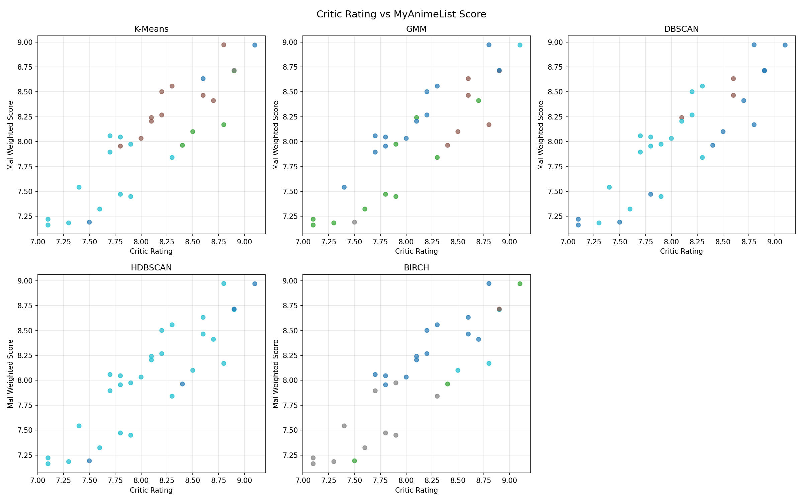
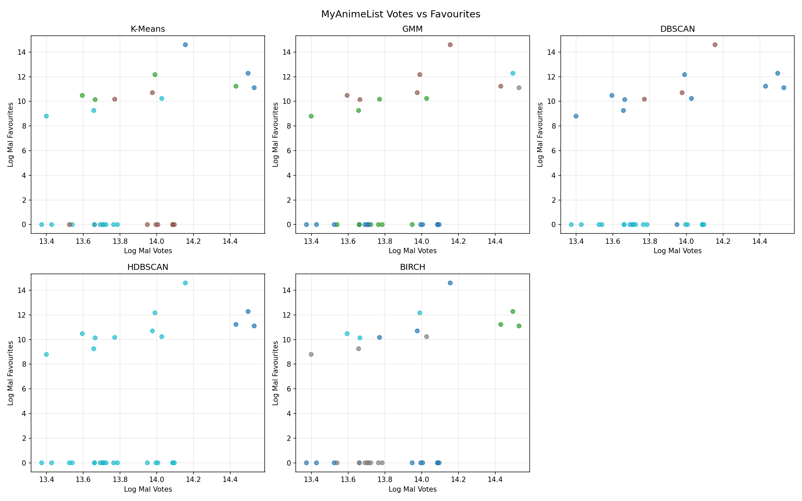
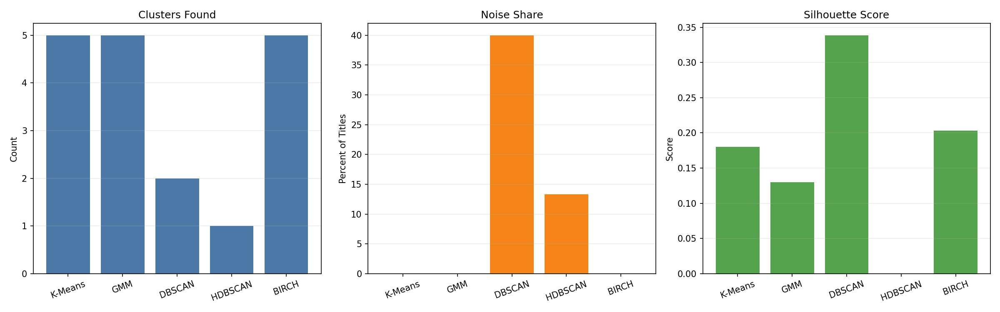
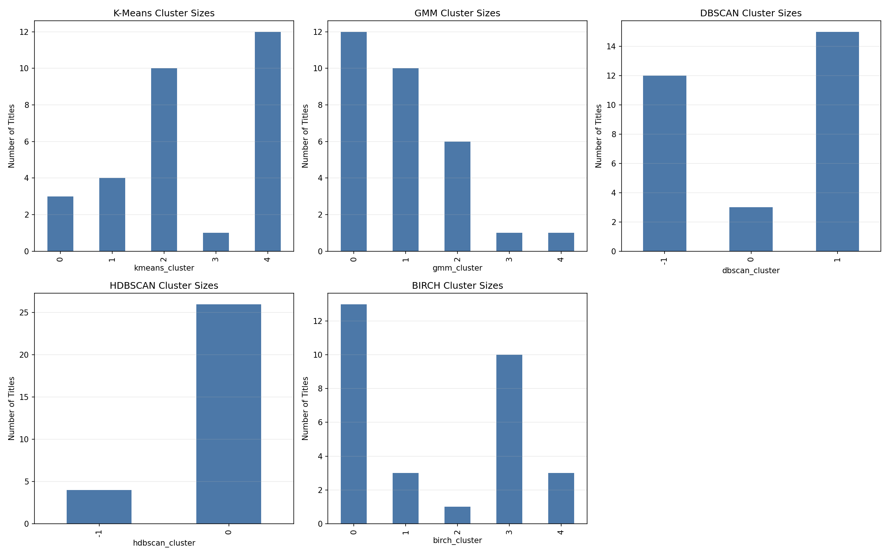

Titles
30
Anime included after merging critic and MAL data.
This report explores whether anime that are highly rated by critics are also the shows that attract the strongest MyAnimeList engagement, or whether popularity and critical opinion split into different clusters.
Group Members: Christofer Vega | Alyssa Sombrero
The project is trying to measure the disconnect between two signals: curated critic ratings from anime.csv and community behavior from MyAnimeList snapshots. By clustering titles with both rating and popularity features, the site shows whether the same anime dominate both systems or whether fame, fan activity, and perceived quality separate into different groups.
The clustering output is useful because a simple ranking does not explain why titles differ. Grouping titles by rating gap, engagement, release timing, and runtime reveals where mainstream hits, classics, divisive titles, and universally praised series land relative to one another.
Clone the repository, move into main-project, install the Python dependencies used by the project, and run python main.py to generate the clustering outputs and rebuild the website. If you want the plots refreshed as well, run the same command without disabling visualization so the output images are recreated before the report page is written.
A typical workflow is: git clone ..., cd CS472-ML_Ratings_Predictor\main-project, install packages such as pandas, scikit-learn, matplotlib, and the clustering dependencies, then execute python main.py.
Repository link: https://github.com/CocoCat0/CS472-ML_Ratings_Predictor
The report uses critic data from anime.csv and MAL popularity snapshots from Votes_2023_03_16.csv. The tables below show the first 5 rows of each source.
| Anime | Release date | Length | Genre | Rating |
|---|---|---|---|---|
| Fullmetal Alchemist: Brotherhood | (2009-2010) | 24 min | Animation, Action, Adventure | 9.1 |
| Attack on Titan | (2013-2023) | 24 min | Animation, Action, Adventure | 9 |
| Hunter x Hunter | (2011-2014) | 24 min | Animation, Action, Adventure | 9 |
| Bleach: Thousand-Year Blood War | (2022- ) | 24 min | Animation, Action, Adventure | 9 |
| Ginga eiyû densetsu | (1988-1997) | 25 min | Animation, Action, Drama | 9 |
| Votes | Score | English Name | Favourites count | Popularity ranking |
|---|---|---|---|---|
| 766783 | 10 | Death Note | 3645111 | 2 |
| 765093 | 9 | Death Note | 3645111 | 2 |
| 598036 | 8 | Death Note | 3645111 | 2 |
| 283202 | 7 | Death Note | 3645111 | 2 |
| 94128 | 6 | Death Note | 3645111 | 2 |
Each algorithm groups the same engineered feature set, but each one defines a "cluster" differently. That difference is what makes the result comparison meaningful.
Partitions anime into a fixed number of compact groups by repeatedly moving each title toward the nearest centroid.
Models each group as a Gaussian distribution so overlapping clusters can still be separated probabilistically.
Builds clusters from dense neighborhoods and marks isolated titles as noise when they do not belong to any dense region.
Extends density clustering hierarchically so it can adapt to uneven cluster shapes and keep uncertain titles separate.
Compresses the feature space into a clustering tree first, then assigns anime to scalable, relatively balanced partitions.
This section only shows the summary visuals that compare all algorithms side by side. Each figure is followed by a short interpretation of what it contributes to the analysis.

Each panel clusters the same titles using critic ratings and MAL weighted scores, making it easier to see where agreement and disagreement between the two rating systems form natural groups.

These scatterplots compare MAL votes and favourites across algorithms, showing whether highly engaged titles form their own communities or stay mixed with the rest of the dataset.

This bar-chart summary compares how many clusters each method found, how much noise it labeled, and how strong the resulting separation was through silhouette score.

This chart shows how evenly each algorithm distributed titles across clusters, which helps distinguish balanced segmentations from methods dominated by one large group.
The cluster descriptions below summarize the K-Means groupings with representative titles, followed by notable facts from the overall algorithm comparison.
Well-regarded by critics and MAL; varied era, solid engagement
Recent high-rated mainstream hits with strong fandom
Classic standalone with high critic score
Moderately received/divisive series where MAL trails critics
Iconic, long-running franchises with huge engagement; MAL < critic
Polarizing mega-hit: extremely high engagement but lower scores
Universally acclaimed masterpiece with top engagement
The problem this project is trying to solve is whether popularity can be treated as a proxy for quality. The clustering results suggest the answer is only partially yes: some anime are strong on both critic score and MAL engagement, but other groups show that iconic franchises, divisive hits, and classics can attract very different levels of fan activity without matching critic behavior exactly.
Across this run, the average signed rating gap was -0.0621 and the average absolute gap was 0.2267, so the disconnect is not overwhelming in every case, but it is large enough to create distinct clusters. BIRCH produced the clearest overall tradeoff for telling that story because it separated the dataset without relying on heavy noise labeling.